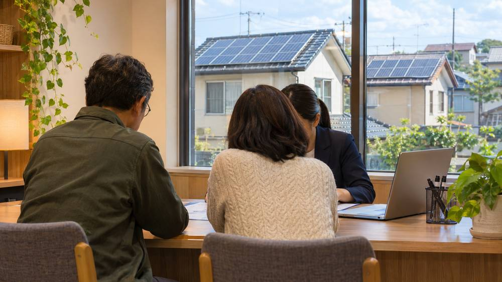

시민·사회연대경제 조직이 함께 출자하는 '가치금융신협' 설립 추진…11일 국회서 포럼

사회주택·의료돌봄·재생에너지에 자금 공급 구상…국회의원 5명 공동 주최, 행안부·신협중앙회 후원
시민과 사회연대경제 조직이 함께 출자하고 운영하는 금융협동조합 '(가칭)가치금융신협' 설립이 추진된다. 추진위원회는 그동안 일반 금융권에서 돈을 빌리기 어려웠던 사회주택, 의료·돌봄, 재생에너지 분야에 자금을 공급해 사회연대경제 안에서 돈이 돌게 하겠다는 구상을 내놓았다. 11일 오후 서울 여의도 국회도서관 소강당에서 설립동의자 결의대회와 국회 정책포럼이 "금융민주화, 가치금융신협 설립으로 시작하다"를 주제로 열린다. 행사는 더불어민주당 김영배·민병덕·박주민·송재봉 의원과 기본소득당 용혜인 의원이 함께 주최하고, 행정안전부·한국사회적기업진흥원·신협중앙회 등이 후원한다. 출자 목표액이나 조합원 규모는 아직 밝히지 않았다.
시민에너지 관점
독일의 시민에너지협동조합들은 지역 협동조합은행의 대출을 바탕으로 성장해 왔고, 시민 발전소와 협동금융은 오래전부터 짝을 이뤄 왔다. 작은 신협이 발전소 대출의 위험을 감당할 수 있겠느냐는 우려가 있지만, 재생에너지 발전소는 20년 가까이 판매 수익이 예측되는 자산이어서 협동금융과 잘 맞는 대상이다. 햇빛소득마을과 시민발전소가 가장 먼저 부딪히는 벽이 초기 자기자본과 담보인 만큼, 시민이 주인인 금융이 그 벽을 낮추는 열쇠가 될 수 있다. 시민발전 협동조합과 마을이 설립 동의자로 참여해 재생에너지 대출 상품을 처음부터 함께 설계해야 한다.
출처: 더나은미래 2026-11-06 채예빈 원문 보기
市民と社会連帯経済の組織が共同出資する「価値金融信協」設立へ…11日に国会でフォーラム
社会住宅・医療介護・再生可能エネルギーに資金を供給する構想…国会議員5人が共催、行政安全部・信協中央会が後援
韓国で、市民と社会連帯経済の組織が共に出資し運営する金融協同組合「（仮称）価値金融信協」の設立が進められている。推進委員会は、これまで一般の金融機関から資金を借りにくかった社会住宅、医療・介護、再生可能エネルギーの分野に資金を供給し、社会連帯経済の中でお金が循環する仕組みをつくる構想を示した。11日午後、ソウル・汝矣島の国会図書館小講堂で、設立同意者決議大会と国会政策フォーラムが「金融民主化、価値金融信協の設立から始める」をテーマに開かれる。行事は共に民主党の金栄培、閔丙徳、朴柱民、宋載鳳の各議員と基本所得党の龍慧仁議員が共催し、行政安全部、韓国社会的企業振興院、信協中央会などが後援する。出資目標額や組合員の規模はまだ明らかにしていない。
市民エネルギーの視点
ドイツの市民エネルギー協同組合は地域の協同組合銀行の融資を土台に成長しており、市民発電所と協同金融は以前から組になってきた。小さな信協が発電所融資のリスクを負えるのかという懸念はあるが、再生可能エネルギー発電所は20年近く売電収入が見込める資産で、協同金融と相性のよい対象だ。「太陽光所得村」や市民発電所が最初にぶつかる壁が初期の自己資本と担保である以上、市民が持ち主の金融はその壁を低くする鍵になりうる。市民発電協同組合と村が設立同意者として参加し、再生可能エネルギー向け融資商品を最初から共に設計すべきだ。
出典: 더나은미래 2026-11-06 Chae Ye-bin 原文を読む
市民与社会连带经济组织共同出资的"价值金融信协"推进设立…11日在国会举办论坛
构想向社会住宅、医疗照护、可再生能源提供资金…5名国会议员共同主办，行政安全部、信协中央会赞助
韩国正在推进设立由市民与社会连带经济组织共同出资、共同运营的金融合作社"价值金融信协"（暂定名）。筹备委员会提出构想，向此前难以从一般金融机构借款的社会住宅、医疗与照护、可再生能源领域提供资金，让资金在社会连带经济内部循环。11日下午，设立同意者决议大会暨国会政策论坛将在首尔汝矣岛国会图书馆小讲堂举行，主题为"金融民主化，从设立价值金融信协开始"。活动由共同民主党议员金荣培、闵丙德、朴柱民、宋载凤和基本收入党议员龙慧仁共同主办，行政安全部、韩国社会企业振兴院、信协中央会等提供赞助。出资目标金额和社员规模尚未公布。
市民能源视角
德国的市民能源合作社依靠地方合作银行的贷款成长起来，市民发电站与合作金融早已相互配合。有人担心小型信协能否承担发电站贷款的风险，但可再生能源发电站是近20年售电收入可以预期的资产，与合作金融十分契合。既然"阳光收入村"和市民发电站首先遇到的障碍是初期自有资金和抵押，由市民当家作主的金融就可能成为降低这道门槛的钥匙。市民发电合作社和村庄应作为设立同意者参与，从一开始就共同设计可再生能源贷款产品。
来源: 더나은미래 2026-11-06 채예빈 查看原文
Push to launch 'Value Finance Credit Union' co-owned by citizens and social solidarity economy groups; forum at National Assembly on the 11th
Plan to channel funds to social housing, health and care, and renewable energy; co-hosted by five lawmakers and backed by the interior ministry and the National Credit Union Federation
A financial cooperative tentatively named the Value Finance Credit Union, jointly funded and run by citizens and social solidarity economy organizations, is being organized in South Korea. Its founding committee plans to lend to areas that have struggled to borrow from mainstream finance, such as social housing, health and care, and renewable energy, so that money circulates within the social solidarity economy. A rally of founding supporters and a policy forum titled "Financial democracy begins with founding the Value Finance Credit Union" will be held on the afternoon of the 11th in the small auditorium of the National Assembly Library in Yeouido, Seoul. The event is co-hosted by Democratic Party lawmakers Kim Young-bae, Min Byoung-dug, Park Ju-min and Song Jae-bong and Basic Income Party lawmaker Yong Hye-in, and sponsored by the Ministry of the Interior and Safety, the Korea Social Enterprise Promotion Agency and the National Credit Union Federation of Korea, among others. The committee has not yet disclosed a capital target or membership size.
Citizen Energy View
Germany's citizen energy cooperatives grew on loans from local cooperative banks, and citizen power plants and cooperative finance have long gone hand in hand. Some may doubt whether a small credit union can carry the risk of power plant loans, but renewable plants are assets with power sales income that can be projected for close to 20 years, which suits cooperative finance well. Since the first wall that sunlight income villages and citizen power plants hit is upfront equity and collateral, finance owned by citizens can be the key to lowering it. Citizen energy cooperatives and villages should join as founding supporters and help design renewable energy loan products from the start.
Source: 더나은미래 2026-11-06 Chae Ye-bin Read the original